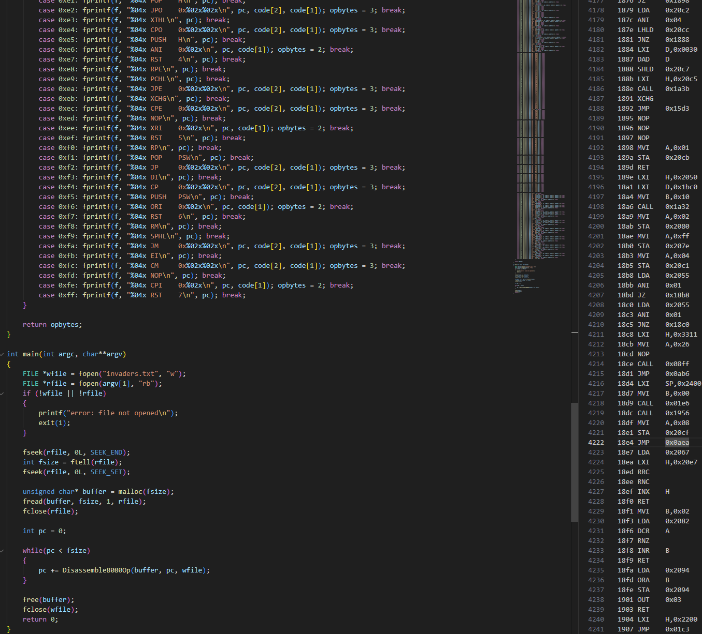

Intel 8080 Disassembler
I've always had an interest in low level programming and its evolution over time so I made a disassembler for Intel 8080 ROM files. This can be seen below with part of the code and some of the disassembled Space Invaders code on the right. In the future, I would like to continue this project and create a full Intel 8080 emulator.
View Github
